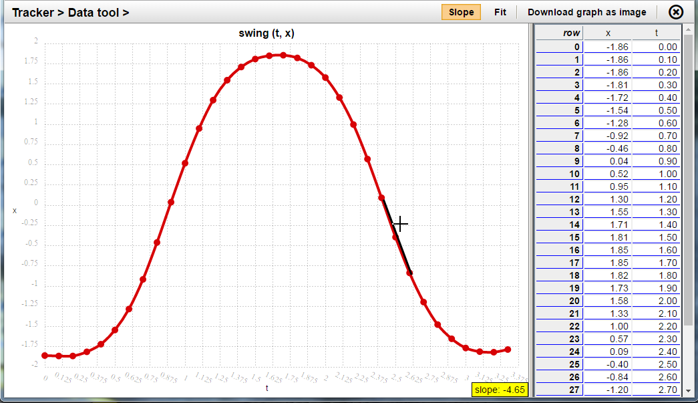
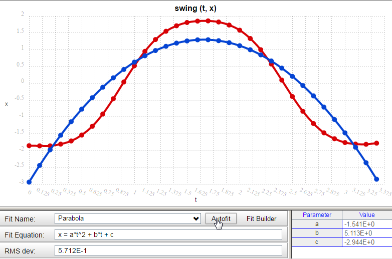
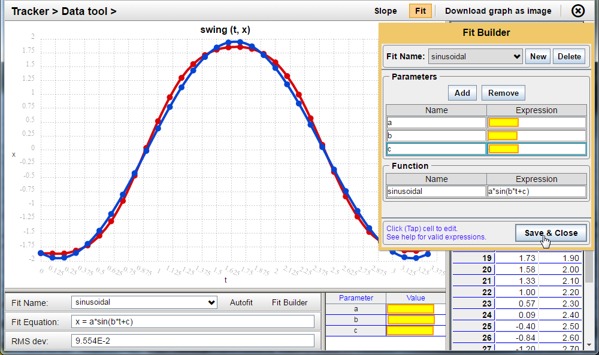

The Date tool enables you to investigate data, data plots, and mathematical relationships. If you want to investigate any plot you see in the Main view, just double-click that plot to enter the Data tool.
To return to the Main view, just click the Data tool’s Close button in the upper right.

You can use the Data tool to inspect the slope of a graph at any point between the two endpoints. Just click the Slope button in the Data tool (as shown above) and trace along the path of the curve. A black tangent line segment appears on the plot at your cursor location. The plot’s slope at that point appears in a yellow box at the bottom of the graph.
The button “Download graph as an image” does just what it says. The graph portion of the Data tool is captured and downloaded to your computer or mobile device.
Be sure you know where downloaded images are stored on your device. You also may wish to rename these files each time you download one. The default image names are understandable, but not very descriptive (especially if you are capturing several images based on the same graph.)
To try to fit a mathematical relationship to a graph, click the Fit button at the top of the Data tool.
Three common function types are available for “Autofitting.”
You just select the Fit you want and click the “Autofit” button to see how well that relationship matches your data. In the case below, Line and Exponential are horrible fits, as you might expect. The parabola fit (blue) does the best it can, but it’s still not very close.

If none of the three common Autofit functions provides a good fit, you have a mathematical puzzle to solve.
You may see that the shape of the swing’s x vs. t graph above (red) looks like a sine curve. That can be expressed mathematically like this in an (x,y) coordinate system:
y = a*sin(b*x + c)
You can build this relationship in Fit Builder for the (t, x) plot shown above. Here’s the process (and illustrated in the image below):
Once in the Fit view, click the Fit Builder button (next to Autofit).
When the orange Fit Builder dialog opens, click the New button near the top to define a new relationship.
Under Parameters use the Add button to create the three parameters you need for the sinusoidal relationship outlined above: a, b, and c. (You can leave their expressions at 0, to begin with.)
Change the default name for the function (Fit_1) to whatever makes sense for your model (“sinusoidal” in this example).
Enter a general mathematical relationship using your defined parameters.
Like a lot of graphs in science and engineering, this graph is NOT plotting “x” as the horizontal variable and “y” as the vertical variable. So, it’s not an (x, y) graph; it’s a (t, x) graph. For this graph, you’ll need to substitute those variables for x and y in the general mathematical form shown above, like this:
x = a*sin(b*t + c)
In Fit Builder, then, you just need to enter the expression on the right half of that equation: a*sin(b*t + c)
With all parameters set to 0, you’ll just see a horizontal line along x = 0. Obviously not right; you want a wavy curve. However, once you enter some other values for a, b, and c (like 2, 2, 2) you’ll start to see a promising plot shape.
Finally, if you know what each parameter does in this expression, you should be able to zero in on a reasonable mathematical model for the swing’s (t, x) relationship.
The final parameter expression values in the image below have been hidden (yellow boxes) to leave you with that mathematical modeling challenge. (Swing plot is red; mathematical fit is blue.)
